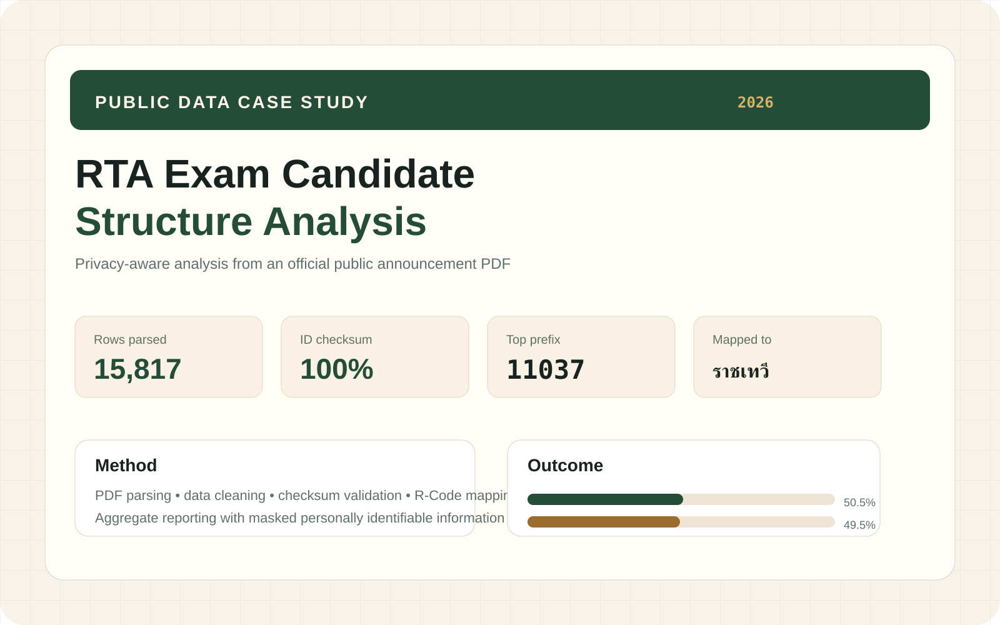
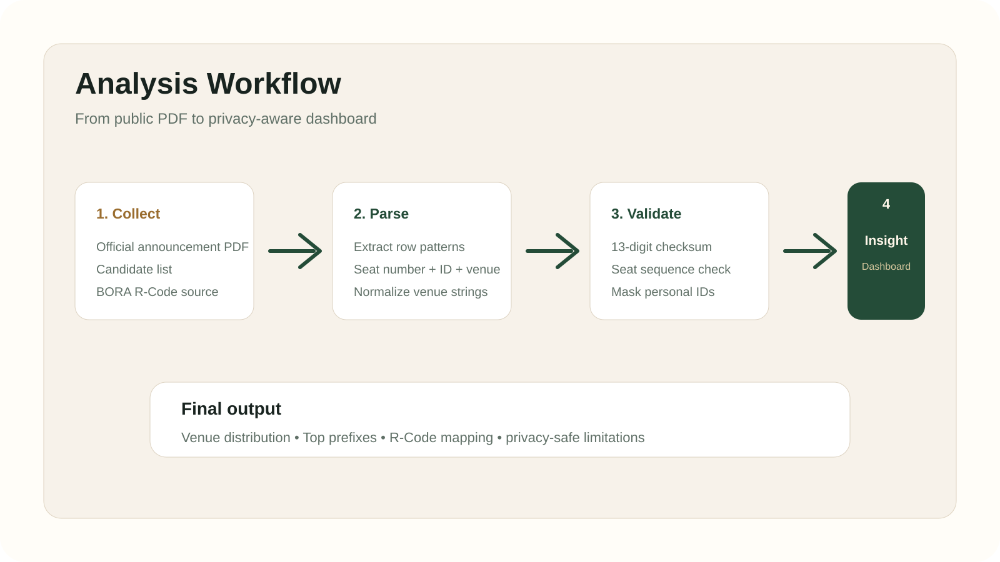
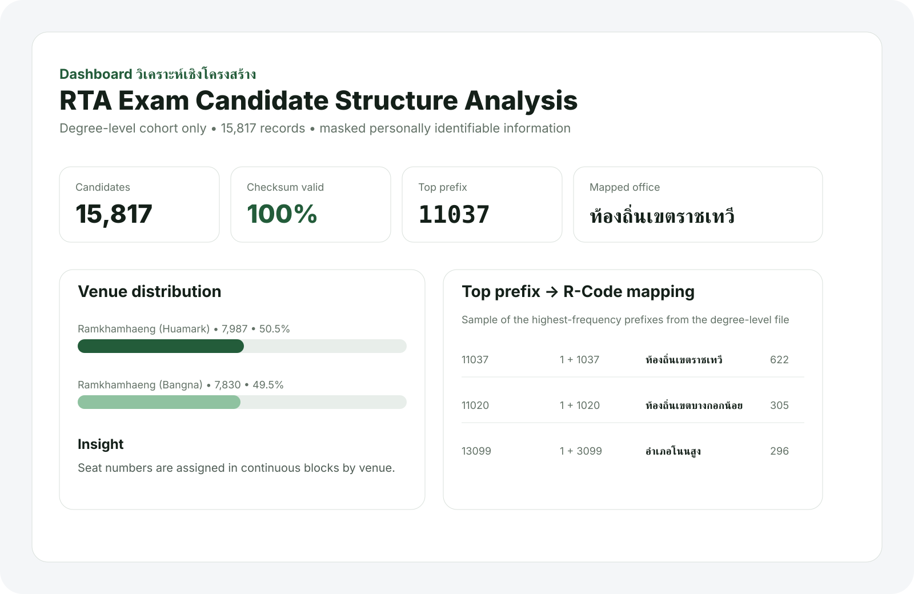

Problem
The source was a public PDF announcement with thousands of candidate rows. Useful signals were buried in text, and direct record exposure would be inappropriate for a portfolio.
Case Study
A public-sector data case study built from an official Royal Thai Army exam announcement. I turned a long-form PDF candidate list into a structured, privacy-aware dashboard that validates row quality, analyzes venue allocation, and maps high-frequency prefixes to BORA registry-office codes.
15,817
Degree-level rows parsed
100%
Checksum validation pass
15
Top prefixes mapped

Problem
The source was a public PDF announcement with thousands of candidate rows. Useful signals were buried in text, and direct record exposure would be inappropriate for a portfolio.
Approach
Parse the PDF into structured rows, validate the ID format, normalize venues, map top prefixes to official R-Code offices, and present only aggregate insights with masked identifiers.
Outcome
A source-grounded dashboard that shows data cleaning quality, venue distribution, registry-office clustering, and clear analytical limits.

The output focuses on quality, structure, and limitations. It highlights venue allocation, top prefixes, and R-Code mapping while explicitly warning against unsupported demographic claims such as age or gender.
